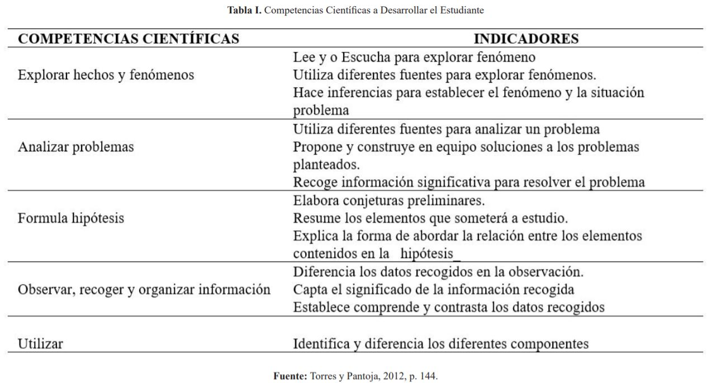
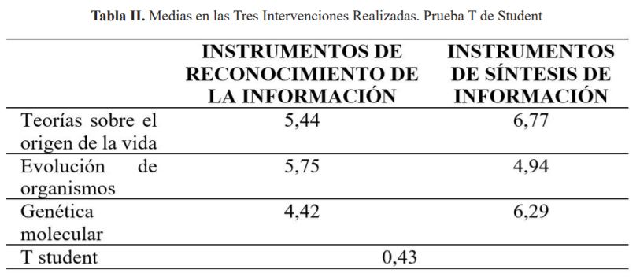
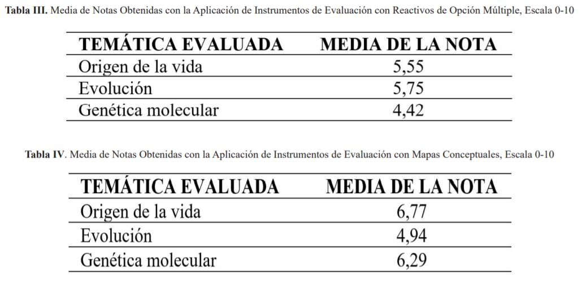

Introducción
El problema de investigación nace de la práctica de la enseñanza en el área de Ciencias Naturales en
educación básica secundaria, en la cual se hace necesario aplicar estrategias de enseñanza para la
adquisición de aprendizaje significativo. Lo anterior, representa conocer el desarrollo de habilidades
científicas como: Exploración de hechos y fenómenos, análisis de problemas, observación, recolección,
organización de información relevante, utilización de diferentes métodos de análisis, evaluación de los
métodos y exposición de resultados.
Para dar cuenta de los avances, cambios, aspectos mejorables y logros en la acción didáctica, el docente
cuenta con la evaluación, proceso clave interrelacionado con la enseñanza y el aprendizaje. Con el fin de
orientar al docente para mejorar el proceso de evaluación en el sistema escolar del país, el Ministerio de
Educación Nacional de Colombia (en adelante Mineducación) reglamentó, mediante el Decreto 1290 (2009), la
evaluación del aprendizaje y la promoción de los estudiantes de los niveles de educación básica y media. En
este instrumento se indican las pruebas nacionales aplicadas al finalizar el grado undécimo; mismas que
“permiten el acceso de los estudiantes a educación superior institucional, además, la evaluación del
aprendizaje realizada en los establecimientos de educación básica y media es el proceso permanente y
objetivo para valorar el nivel de desempeño de los estudiantes” (Mineducación, 2009, p. 1).
El referido Decreto 1290 (2009), en su artículo 3, establece los propósitos de evaluación de los estudiantes
en el ámbito institucional, con base en lo siguiente:
Identificar las características personales, intereses, ritmos de desarrollo y estilos de aprendizaje de los
estudiantes para valorar sus avances; proporcionar información básica para consolidar o reorientar los
procesos educativos relaciones con el desarrollo integral de los estudiantes; suministrar
información que permitan implementar estrategias pedagógicas para apoyar a los estudiantes que presenten
debilidades y desempeños superiores en su proceso formativo; determinar la promoción de estudiantes; aportar
información para el ajuste e implementación del plan de mejoramiento institucional. (p. 1)
El precedente decreto, autorizó autonomía a las instituciones para crear su Sistema Institucional de
Evaluación de Estudiantes (SIEE), siguiendo los parámetros establecidos en éste; por tanto, la Institución
Educativa Samoré, creó y aplica su SIEE desde el año 2010 y realiza ajustes cada año de acuerdo con las
oportunidades de mejoramiento detectadas durante su aplicación en cada una de las áreas del conocimiento. La
Institución Educativa Samoré es una dependencia pública rural y el único plantel de dicho corregimiento en
el municipio de Toledo, departamento Norte de Santander, Colombia.
Concretamente, en relación al hecho educativo, se tiene que los resultados de las pruebas externas aplicadas
por el Estado colombiano denominadas SABER 11º, presentadas por los estudiantes de la Institución educativa
Samoré de último grado (undécimo), en el año 2012, indican que el nivel de desempeño alcanzado en la
evaluación de competencias del área de Ciencias Naturales es medio; el menor promedio se ubica en la tercera
competencia, concerniente a la capacidad para plantear preguntas y procedimientos adecuados para buscar,
seleccionar, organizar e interpretar información relevante para dar respuesta a preguntas.
Además, sólo un 5% de los egresados continúan con sus estudios en formación superior y lo hacen en carreras
sin secuencia propedéutica con los estudios cursados como es el técnico en explotaciones agropecuarias
ecológicas. La razón de mayor peso para el no ingreso a estudios superiores en instituciones públicas, es el
bajo resultado demostrado en las recién mencionadas pruebas externas. En este sentido, es necesario
considerar el desarrollo de instrumentos de evaluación sumativa, en el área de Ciencias Naturales ya que
estos detectan
aprendizajes memorísticos de contenidos declarativos, sólo factuales, y que distan de colaborar para
emprender acciones en pro del aprendizaje significativo.
Para evaluar el aprendizaje significativo en el área de Ciencias Naturales, utilizando instrumentos
pertinentes, se propone la indagación desde la teoría de Ausubel. El aprendizaje significativo desde la
teoría Ausbeliana tiene dos características básicas:
No arbitrariedad y sustantividad. No arbitrariedad, quiere decir el trabajo didáctico con materiales para
propiciar la activación del conocimiento del estudiante, entonces, el docente debe prever para las clases el
empleo de recursos coherentes con el contenido a estudiar vinculados a la estructura cognitiva del aprendiz,
de forma tal que faciliten la comprensión de los contenidos planificados. La sustantividad, significa lo
incorporado a la estructura cognitiva es la sustancia del nuevo conocimiento, de las nuevas ideas, no la
repetición memorística de palabras. (Moreira, 1997,
p. 2)
Desarrollar este estudio permite comparar, a razón de su validez, dos clases de instrumento de evaluación
sumativa, para detectar aprendizaje significativo basado en las características propuestas por Ausubel: no
arbitrariedad y sustantividad; esto contribuye a hacer de la evaluación un proceso acorde a la complejidad
creciente en cuanto a los aprendizajes que ha de desplegar y cimentar el estudiante.
La presente investigación visiona mejorar la práctica educativa en la enseñanza del área de Ciencias
Naturales en educación básica, porque al evaluar correctamente, aplicando instrumentos confiables, se puede
prever y emprender el aprendizaje efectivo de competencias científicas de los estudiantes, para su
desarrollo integral e incrementar sus posibilidades
para el ingreso futuro a instituciones de educación superior.
Bases teóricas
En los distintos niveles nacional e internacional, los investigadores del mundo han venido desarrollando
conceptos, teorías, metodologías, visiones e interpretaciones en torno al Aprendizaje Significativo y su
identificación a través de diversas herramientas y de varios proyectos curriculares y, concretamente, en
torno a la evaluación de esta teoría, desde Ausbel, aplicada al área de Ciencias Naturales básicas.
A continuación, se abordarán algunos de estos estudios por nivel, que puedan triangularse y apreciarse para
la presente investigación, con los procesos gestados desde la educación básica en su evaluación de procesos
y herramientas para el aprendizaje significativo desde diversos teóricos.
Nacional
Vargas (2018), quien en su tesis titulada “Aprendizaje significativo para mejorar la competencia uso
comprensivo del conocimiento científico de las ciencias naturales en grado quinto de primaria”,
pretende validar el aporte de la teoría del aprendizaje significativo en la mejora de una
competencia específica en estos 23 estudiantes de educación básica (“uso comprensivo del
conocimiento científico”), también apoya su trabajo en David Ausbel, utilizando, para la consecución
de dicho objetivo un enfoque cualitativo (socio- crítico), la observación participante e
“instrumentos de recolección de datos como las bitácoras de los estudiantes, diario de campo,
portafolios, registros fotográficos, evaluaciones diagnósticas, formativas y sumativas”, para,
finalmente, analizar los procesos llevados acabos desde la investigación, mediante una seria de
evaluaciones de diagnóstico, de la fase de formación y la evaluación final, donde se pudo evidenciar
que el aprendizaje significativo brindó a los estudiantes un aprendizaje a largo plazo, dándole sentido a
este de manera didáctica, teniendo
en cuanta el contexto y la acción que se haga sobre este; además, les permitió revisar sus
conocimientos previos y afianzarlos.
También Ruiz (2018), refiere a un proceso de evaluación formativa hacia unos aprendizajes formativos en
matemáticas: “Aprendizajes Significativos desde la evaluación formativa”. El objetivo de esta autora es
medir los resultados de integrar una Unidad Didáctica para la facilitación de procesos de aprendizaje; lo
que hace mediante un enfoque cualitativo de tipo descriptivo y se utilizan la observación directa, el diario
pedagógico, la entrevista semiestructurada, el cuestionario y la dicha unidad didáctica, como técnicas de
recolección de datos. La autora, concluye el trabajo citado con la afirmación de que la evaluación es
relevante en la educación en la medida que recolecta información sobre aprendizajes adquiridos y presenta
propuestas para mejorar la interiorización de aprendizajes y suplir necesidades. Dentro de este proceso
también la creatividad del docente y la participación activa de estudiantes y padres de familia cumplen un
papel relevante. Así, la autora termina concluyendo que esta Unidad Didáctica, permite la construcción de
conocimiento que se articulen con sus necesidades e intereses y los de la vida real, obteniendo así,
motivación y deseo por aprender en los estudiantes y dando cuenta de un aprendizaje significativo.
Internacional
Así mismo, Espinoza (2015), orienta su investigación, hacia una guía didáctica que responda también a un
aprendizaje significativo y a la praxis en la educación básica, por medio de su tesis, denominada
“Elaboración y aplicación de la guía didáctica “la magia de lasciencias” en base atécnicas activas para
propiciar aprendizajes significativos, de ciencias naturales en los estudiantes de séptimo año, de la
Escuela Básica “Yaruquíes” del cantón Riobamba, provincia de Chimborazo durante el año
través de la metodología tradicional y de técnicas de pretest y postest y manipuló la información obtenida
con ayuda de técnicas estadísticas paramétricas, para, finalmente, validar su hipótesis mediante la prueba
zeta normalizado. Resultado de lo anterior, la autora afirma que dicha guía didáctica es superior a la
metodología tradicional o de clase magistral, ya que esta tiene un mayor alcance en el aprendizaje de los
estudiantes.
También Cobo (2008), desde su estudio denominado “Una propuesta para el aprendizaje significativo de los
estudiantes de la escuela San José La Salle, de la ciudad de Guayaquil” se plantea como objetivo promover,
desde la docencia, el aprendizaje significativo y afrontar también desde allí los retos que nacen de la
sociedad del conocimiento, mediante la teoría de asimilación. El autor, dirige su investigación mediante un
enfoque cualitativo con método hermenéutico- descriptivo, dando una posición personal explícita al
investigador. Lo concluido por dicho investigador es que, dejando a un lado la enseñanza expositiva, los
docentes deben darles significatividad a sus contenidos curriculares de enseñanza – aprendizaje y que el
seguimiento, la retroalimentación y el acompañamiento en las capacitaciones a estos son esenciales para
reformular la escuela y dejar de lado la arbitrariedad, mecanicismo y la forma literal de transferir
conocimientos en clase.
González y Caballero (2019), en su tesis “Estrategias de enseñanza aprendizaje para lograr un aprendizaje
Significativo en la unidad medio ambiente y recursos naturales del área de ciencias naturales”, se propone
describir la importancia de las estrategias didácticas en la educación para el aprendizaje significativo,
específicamente en la disciplina de Ciencias Naturales: medio ambiente y recursos naturales, para promover
en los estudiantes esta proyección social ambiental. Las autoras desarrollan su estudio mediante una
revisión documental, para elegir de allí estrategias didácticas y prácticas de intervención como: “la
observación, lectivo 2013- 2014”. La autora, recolectó datos a clases experimentales, el cuadro sinóptico,
el cuadro comparativo, el mapa tipo sol, el mapa semántico” (p. 1), mediante las cuales se logra mejorar la
comprensión del contenido y una estrecha relación entre conocimientos previos y nuevos de los estudiantes de
grado noveno del colegio donde se llevó a cabo la investigación.
Para cerrar, Ávila (2015), desde su investigación denominada “Evaluación de técnicas activas para el
aprendizaje significativo en el área de Ciencias Naturales con Estudiantes de Básica Superior, Unidad
Educativa Honorato”, plantea el método científico para recoger la información, el método deductivo-inductivo
en un segundo momento de validez de información y el descriptivo, que, mediante la observación, permitirá
organizar los datos obtenidos. Así, la autora apoya su investigación en las siguientes técnicas:
cuestionarios, visitas de campo, revisión documental y fichas de observación, para concluir que las técnicas
activas de aprendizaje, de la mano de la motivación, el entusiasmo y el dominio del tema que proyecte el
docente, permiten que haya un aprendizaje significativo articulado al contexto donde se desenvuelve el
estudiante en Ciencias Naturales.
Aprendizaje de Ciencias
El área de Ciencias Naturales conforma una de las asignaturas básicas de la educación; su importancia radica
en su enfoque para la comprensión, reflexión e investigación de la realidad local y planetaria, por eso se
concibe como “un conocimiento vital, cambiante, constitutivo de las maneras en las que los seres humanos se
relacionan con el mundo físico y biológico y que, por tanto, configuran la vida también de maneras
particulares” (Alcaldía Mayor de Bogotá, 2014, p. 20).
En efecto, las Ciencias Naturales están presentes en múltiples actividades y su estudio abarca diferentes
componentes bióticos y abióticos del planeta, de allí, la importancia de ahondar más allá de conceptos, para
acceder a la comprensión,
a las esferas biológica, ecológica, sociológica y económica de los seres vivos y no vivos del orbe.
El aprendizaje en Ciencias Naturales, de acuerdo con Morin, citado por Tacca (2011) “debe buscar la
explicación del por qué se dan los eventos o fenómenos, y cómo se producen; esto es lo que hará progresar al
conocimiento científico” (p. 144). Efectivamente, deben estar presentes la motivación intrínseca y la
motivación extrínseca activadas conjuntamente, para generar deseos de aprender y disponerse a comprender y
analizar las distintas interrelaciones entre agentes, factores y elementos.
El énfasis, se dirige a comprender y mirar con visión crítica-constructiva el mundo, la vida, con toda su
complejidad y lo más trascendental, cimentar en los estudiantes aprendizajes significativos para que puedan
desempeñarse con conciencia social en la realidad, al estar al tanto y actuar responsablemente en su
entorno. A la vez, se trata de entender y aplicar la ciencia para el bien colectivo, valorar los recursos
del país y la vida en sus heterogéneas manifestaciones. De esta forma, el docente debe ofrecer a los jóvenes
una formación que envuelva pensar con amplitud, participar y revisar los cambios vertiginosos de la ciencia
y la tecnología.
Teoría de Ausubel
Formar en educación, se plantea actualmente como un proceso integral, esto corresponde a su vez al
aprendizaje significativo, no como una moda o un “slogan”, sino como construcción sostenida, intencionada y
reflexiva. Ausubel, Novak y Hanesian (1983), en respuesta al predominio del conductismo, propuso el modelo
de enseñanza y de aprendizaje fundado en el descubrimiento, aprender de aquello que se descubre.
Ausubel indicó la importancia de pensar, atender y propiciar el proceso de construcción de significados por
parte de quien aprende. Para esto, es relevante que el docente prevea las estrategias
crítica, contextualización de información inherente didácticas mediadoras a fin de favorecer la
adquisición, asimilación y aprehensión de los contenidos curricularmente estipulados para los estudiantes,
para que así ellos puedan adjudicar el significado a esos contenidos y contextualizarlos.
En el caso de las Ciencias Naturales, se debe provocar de forma “deliberada cambios cognitivos, susceptibles
de dotar de significado individual y social (Ausubel, citado por Rodríguez, 2011, p. 31) a los saberes
estudiados. De esta forma, se reconoce el emprendimiento de los aprendizajes desde y con los saberes previos
del alumnado, los cuales sirven de plataforma para construir, modificar o incluir otros saberes.
Aun teniendo la voluntad para aprender y con el manejo de recursos significativos, se hace difícil el
aprendizaje significativo cuando se carece de los subsumidores (conocimientos preexistentes) coherentes,
pertinentes y puntuales que valgan de anclaje para la nueva información. El valor de inclusividad de los
subsumidores compete al grado de conceptualización forzoso para que el estudiante efectúe una labor de
aprendizaje concreta.
Aprendizaje significativo
El aprendizaje significativo equivale, ante todo, a colocar de relieve el proceso de construcción de
significados como elemento central de los procesos de enseñanza y de aprendizaje. El estudiante aprende un
contenido cuando le atribuye un significado. Siguiendo a Ausubel y sus colaboradores “construimos
significados cada vez que somos capaces de establecer relaciones “sustantivas y no arbitrarias” entre lo que
aprendemos y lo que ya conocemos” (Coll, 1988, p. 15).
Para la concreción del aprendizaje significativo, el aprendiz toma el rol de un receptor activo, requiere
emplear los significados que ya internalizó, para enlazar y desarrollar otros aprendizajes. Esto sucede por
la movilización e integración en la estructura cognitiva de características, conceptos, datos, hechos,
procedimientos, valores, es decir,
reorganiza constantemente la información aprendida. Lo contrario al aprendizaje significativo es el
aprendizaje memorístico, que se apoya en recursos e información arbitraria y literal.
El aprendizaje significativo admite la discusión de la información y exhorta la vinculación personal de quien
aprende, es decir, una condición reflexiva hacia el mismo proceso y el contenido objeto de estudio tendente
a preguntarse qué se quiere aprender, por qué y para qué asimilarlo significativamente. Con base en esta
forma de enseñar y de aprender es como el estudiante conseguirá constituir saberes, tamizarlos y
contextualizarlos para hacerlos significativos. Es la manera de ir gradualmente dominando, superando
escenarios cada vez más exigentes.
Por tanto, supone la inclusión constructiva de pensar, hacer y sentir, lo que compone el eje cardinal del
desarrollo humano. Cuando el significado potencial se vuelve en contenido cognoscitivo diferente, específico
e idiosincrático intrínsecamente en particular como consecuencia del aprendizaje significativo, se puede
apuntar el logro de un significado psicológico. Este último, no estriba únicamente en la capacidad que el
estudiante posea para comprender acerca del material lógicamente significativo, también que el estudiante
logre conectar con los aprendizajes previos (Ausubel, Novak & Hanesian (1983) en su estructura cognitiva.
Competencias científicas
Los cambios que enfrenta la educación implican trabajar y asumir las competencias en un todo denominado
planificación y evaluación. Una competencia es el conjunto de saberes, capacidades y disposiciones que hacen
posible actuar e interactuar de manera significativa en situaciones en las cuales se requiere producir,
apropiar o aplicar comprensiva y responsablemente los conocimientos científicos (Hernández, 2005).
La competencia es un referente desde y por el cual el docente y los estudiantes perfilan el ser y deber
ser de la formación, guían la concepción de un saber esperado.
Las competencias científicas corresponden a “la capacidad de un sujeto para reconocer un lenguaje científico,
desarrollar habilidades de tipo experimental, organizar la información y trabajar en equipo, entre otros
desempeños” (Coronado, 2015, p. 134). En efecto, apuntan hacia diferentes aspectos distintos a la
memorización, porque expresan componentes vinculados a la comprensión, aprender a hacer, a realizar de los
hallazgos una fuente de aprendizaje propia y de otros mediante la estructuración coherente, pertinente y
lógica de la información procesada y creada. Como competencias Torres y Pantoja (2012), enlistan:

Como se aprecia, es un proceso que abarca el aprender a ser, estar, saber estar, construir saberes, con
atención a la concepción de seres que pueden pensar, crear, reflexionar, involucrarse con interés en el
aprender por medio de la investigación intencionada y con sentido formativo para el estudiante. Es
importante en la cimentación de competencias que los estudiantes y el docente asuman el conocimiento
complejo, relativo, dinámico y la globalización, así como la inter, intra, trans y multidisciplinariedad. El
estudiante debe partir de preguntas relacionadas con su cotidianidad, plantear hipótesis, aprender y
desplegar la mente, la razón, exploración, el poder trabajar con otros y revisar una y otra vez la
información.
Evaluación Sumativa
Díaz-Barriga y Hernández (2002) mencionan que “la evaluación sumativa ha sido considerada como la evaluación
por antonomasia, al punto que cuando se habla de evaluación en las comunidades escolares, inmediatamente se
le asocia con ella” (p. 352). La evaluación sumativa también denominada evaluación final, es aquella que se
realiza al término de un proceso instruccional o ciclo educativo cualquiera, su fin principal consiste en
verificar el grado en que las intenciones educativas han sido alcanzadas.
Por medio de la evaluación sumativa el docente conoce si los aprendizajes estipulados en las intenciones
fueron cumplimentados según los criterios y las condiciones expresadas en ellas. Pero, especialmente, esta
evaluación provee información que
permite derivar conclusiones importantes sobre el grado de éxito y eficacia de la experiencia educativa
global emprendida (Díaz-Barriga & Hernández, 2002).
Las características que definen la evaluación sumativa señalan la elección, categorización, promoción de los
estudiantes y la legitimación de sus logros de aprendizaje. Este tipo de evaluación es ordinariamente de
carácter final, se concentra esencialmente en los efectos inmediatos, productos subsiguientes y marca de la
acción formativa.
Marco metodológico
La metodología de la investigación es de naturaleza cuantitativa, de tipo experimental, esta, de acuerdo con
Arias (2006) es una investigación netamente explicativa, por cuanto su propósito es demostrar que los
cambios en la variable dependiente fueron causados por la variable independiente. Así, se manipuló la
variable independiente, la validez de instrumentos de evaluación de dos clases (Síntesis de información y
Reconocimiento de la información), para establecer su efecto en la variable dependiente, aprendizaje
significativo desde las dos características propuestas por Ausubel (la no arbitrariedad y sustantividad).
Además, se utilizó la investigación cuasi- experimental, ya que esta tiene un moderado control sobre las
variables de estudio y nos brindará una no aleatoriedad en la asignación de participantes para la aplicación
de los instrumentos de las dos clases y determinar así, el aprendizaje significativo desde las
características de Ausubel. El aprendizaje significativo desde la concepción de Ausubel es la variable
dependiente en la hipótesis planteada: los instrumentos de síntesis de la información tienen mayor grado de
validez que los instrumentos de reconocimiento de la información para la de detección del aprendizaje
significativo de Ciencias, según la Teoría de Ausubel en los estudiantes de
grado noveno. Se aplicó también la prueba de medias de t Student, la cual nos permitirá, según su naturaleza
desde Gosset, citado en Sánchez (2015) “examinar las diferencias entre dos muestras independientes y
pequeñas que tengan distribución normal y homogeneidad en sus varianzas” (p. 59).
El Escenario
La Institución Educativa en la cual se realizó la investigación se encuentra ubicada en zona rural ubicada en
el departamento Norte de Santander, Colombia, es de carácter público y atiende a habitantes provenientes de
familias que subsisten de actividades agropecuarias a pequeña escala, o de empleos generados por la
explotación petrolera del área. El núcleo familiar tiene generalmente un bajo grado de escolaridad.
La población estudiantil está conformada por niños(as), jóvenes entre los 7 años a 18 años, en el nivel de
preescolar, básica primaria, básica secundaria y media técnica. De acuerdo al contexto la media técnica
ofrecida por la institución está enfocada hacia el desarrollo de la actividad económica del sector rural,
explotaciones agropecuarias ecológicas.
Instrumentos
El estudio tenía como finalidad comparar de validez de instrumentos de evaluación, por esta razón se
aplicaron dos clases de instrumentos de evaluación sumativa a la muestra seleccionada: Prueba de
reconocimiento de la información y prueba de síntesis de la información (ver instrumento 1, instrumento 2).
Los contenidos temáticos que se evaluaron en cada una de las pruebas fueron: Teorías sobre el origen de la
vida, evolución de organismos y genética.
Se aplicó un instrumento de cada clase para evaluar la temática propuesta. Esta temática fue seleccionada
porque de esta manera se pueden identificar las características de aprendizaje
significativo conceptual, sustantividad (no al pie de
la letra) y no arbitrariedad (relación entre conceptos).
Posterior a la aplicación de los instrumentos de evaluación se diseñó un cuestionario final que tiene como
objetivo establecer las percepciones de los estudiantes sobre las pruebas aplicadas. Consiste en una
encuesta con 8 preguntas cerradas sobre el ambiente de presentación de las pruebas, la claridad de las
instrucciones, el formato de las pruebas, el tiempo utilizado para la aplicación de las pruebas y la
seguridad frente a las dos clases de instrumentos aplicados.
Diseño de instrumentos
Se inició con el diseño de las pruebas con ítems de opción múltiple, enfocadas en la sustantividad y no
arbitrariedad, características de aprendizaje significativo propuestas por Ausubel, con el objetivo de
evaluar las tres temáticas planteadas.
Posteriormente se diseñaron pruebas enfocadas hacia el diseño de mapas conceptuales a partir de preguntas
abiertas con el objetivo de evaluar las dos características planteadas anteriormente, para lo cual se tuvo
en cuenta el enfoque Ausubeliano en términos de significados: Identificar la estructura de significados que
es aceptada en el contexto de la materia de enseñanza, identificar los significados necesarios para el
aprendizaje significativo de la materia de enseñanza , identificar los significados preexistentes en la
estructura cognitiva del aprendiz, organizar secuencialmente el contenido y seleccionar los materiales
curriculares, usando las ideas de diferenciación progresiva y de la reconciliación integrativa como
principios programáticos, enseñar usando organizadores previos, para hacer puentes entre los significados
que el estudiante ya tiene y los que precisaría tener para aprender significativamente la materia de
enseñanza.
La técnica utilizada para el diseño de pruebas cuantitativas es la construida por Rey (2008). Dentro de las
instrucciones se aclara al estudiante
que el objetivo es construir un mapa que responda la pregunta formulada. La prueba tiene tres fases: Primera
fase: Selección de conceptos a partir de un listado. Segunda fase: Jerarquización de conceptos, orden de los
más generales a los específicos. Tercera fase: Ubicar los conceptos en estructura piramidal abierta. El
estudiante establecerá un enlace con etiqueta que conecte los conceptos, si es necesario.
Los criterios considerados para evaluar el mapa conceptual correspondieron a los indicados por Rey (2008):
Número de conceptos escogidos, número de conceptos válidos, valoración de la jerarquía, número de palabras
conectoras, número de palabras conectoras válidas.
Análisis de la Información Recabada
El análisis fue cuantitativo, específicamente estadístico determinando la media y desviación estándar de las
calificaciones obtenidas en cada uno de los instrumentos de evaluación estudiados, se aplicaron dos
instrumentos en total, seleccionando tres temáticas claves incluidas en el currículo de Ciencias Naturales
para el grado noveno.
Para el análisis estadístico; en las pruebas usando ítems de opción múltiple, se determinó la correlación
aplicando la fórmula para cada ítem del índice biserial puntual, se realizó la prueba de consistencia
interna calculando el índice de discriminación y de dificultad. Para las pruebas con mapas conceptuales se
analizó comprobando la persistencia de los valores durante las tres intervenciones; además para realizar el
análisis comparativo de efectuó la prueba de medias t Student a partir de las calificaciones
obtenidas en cada prueba en una escala de valoración de 0 a 10, con el fin de comprobar la hipótesis de
investigación.
Resultados
Los estudiantes en su mayoría se sintieron satisfechos con el ambiente de aplicación de la prueba (asientos,
temperatura, nivel de ruido), una
minoría asintió sentirse insatisfechos por las altas temperaturas, desafortunadamente en la planta física
sólo existe un aula con aire acondicionado y el resto de las aulas poseen un ventilador no funcional; y por
los malos olores, situación difícil de controlar por las falencias de construcción de evacuación de las
aguas residuales en la institución. Estas dos situaciones influyen en la concentración de los estudiantes
durante la resolución de las pruebas, este tipo de situaciones se presentaron durante la aplicación de los
instrumentos.
En una mayor proporción las instrucciones fueron leídas detenidamente antes de iniciar las pruebas, según la
opinión de los estudiantes. La confusión en el procedimiento se observó en los instrumentos con mapas
conceptuales, allí se hizo necesario en el primer instrumento, acercarse a aclarar dudas sobre el proceso a
seguir, en las pruebas con ítems de opción múltiple no se observó este tipo de situación. A partir de este
punto se deduce que los estudiantes dominan de mejor manera el proceso para selección de opciones de
respuesta (de cuatro afirmaciones, una es la correcta), aunque una vez comprendieron el proceso para
resolver la prueba con mapas conceptuales pudieron continuar sin problemas con la prueba. Todos los
estudiantes manifestaron la claridad en las instrucciones, además de instrucciones escritas en cada una de
las pruebas, prestaron atención a las instrucciones dadas verbalmente.
La mayor parte de los estudiantes opinó sentirse satisfecho con el formato de las pruebas, la proporción que
estaba insatisfecho no manifestó su justificación. La satisfacción de formatos en las pruebas de opción
múltiple estaba dada por el tipo y número de letra adecuado, la buena calidad de impresión, la claridad en
gráficas e imágenes y la hoja de respuestas dada. Se notó que algunas ocasiones los estudiantes erraban en
la ubicación de la respuesta en el número de pregunta, por falta de atención, se les aceptó el uso de
corrector para su corrección. La satisfacción del formato en las pruebas de mapas conceptuales
estuvo dada por la claridad de las impresiones, por el adecuado tamaño de los recuadros.
La mayoría de los estudiantes aceptó haber adivinado algunas preguntas en la prueba de ítems de opción
múltiple, debido al desconocimiento de la respuesta correcta, aunque las leían una y otra vez, otros
estudiantes manifestaron que relacionaron sus emociones en el momento, el estado de ánimo, afectando la
selección de la respuesta.
En una mayor proporción los estudiantes manifestaron satisfacción por contar con tiempo suficiente (50
minutos) para terminar su prueba, teniendo un promedio de 2,5 minutos por pregunta en la prueba de ítems; y
de 16,6 minutos por paso, para la prueba de mapas conceptuales. Se notó que en la prueba de mapas
conceptuales invirtieron menos tiempo que en la de ítems de opción múltiple, entregando el último estudiante
10 minutos antes del tiempo previsto.
La mitad de los estudiantes manifestó no revisar sus respuestas antes de entregar y la otra mitad sí realizó
esta revisión, se notó más esta actitud en la prueba de mapas conceptuales, revisando la ubicación de
conceptos y de palabras claves, si el diseño del mapa correspondía a una respuesta a la pregunta formulada.


La seguridad durante el desarrollo de las pruebas se manifestó en proporciones iguales en los dos tipos de
pruebas, demostrando que no hubo preferencia sobre una de las dos, resultados que coinciden con la
determinación de la validez, en la cual las dos clases de instrumentos fueron válidos para evaluar
aprendizaje significativo en el área de Ciencias Naturales en las temáticas estudiadas.
Las calificaciones obtenidas por los estudiantes según las medias calculadas en cada una de las pruebas
estuvieron ubicadas en su mayoría por debajo del 50% de la puntuación, una posible explicación de lo
anterior es la metodología de enseñanza de los docentes, que en su mayor parte todavía se basan en prácticas
pedagógicas tradicionalistas, en las cuales a los estudiantes aún se trabajan los contenidos declarativos de
forma memorística, es decir se enfoca en el desarrollo de conocimientos conceptuales de tipo factual.
Discusión de resultados
Si se hace un análisis a partir de la pregunta de investigación formulada: ¿Cuál de los instrumentos
utilizados en la enseñanza del grado noveno, síntesis de información o de reconocimiento de información,
muestran mayor validez para la detección del aprendizaje significativo de las Ciencias Naturales?, y tomando
en cuenta que la evaluación sumativa se aplica al final de un proceso educativo, y según Díaz- Barriga y
Hernández (2002), provee información que permite derivar conclusiones importantes sobre el grado de éxito y
eficacia de la experiencia educativa global emprendida , y entendiendo que la validez es la medida que un
instrumento de medición esté mejor diseñado, “el error de medición tenderá a ser menor y se estará midiendo
realmente aquello que se intenta medir” (Valenzuela, 2004, p. 97). Se concluye que los instrumentos de
reconocimiento de la información tienen mayor grado de validez que los instrumentos de síntesis de la
información para
evaluación sumativa de aprendizaje significativo de las Ciencias Naturales en grado noveno de básica
secundaria a partir de las características sustantividad y no arbitrariedad de la teoría Ausubeliana.
Lo anterior, se deduce a partir del análisis estadístico realizado con la prueba de medias de t Student se
rechazó la hipótesis nula y se aceptó la hipótesis alterna planteada: Existe diferencia significativa de la
validez entre instrumentos de síntesis de información e instrumentos de reconocimiento de la información
para la detección del aprendizaje significativo de ciencias según la teoría de Ausubel en los estudiantes de
grado noveno. La deducción de la anterior afirmación: Que las pruebas de reconocimiento de información
tienen mayor grado de validez que las pruebas de mapas conceptuales, se realiza desde el punto de vista de
la evaluación sumativa, no es posible usarlo como instrumento de evaluación de este tipo en el grado noveno
de básica secundaria, donde se realizó el estudio, porque se evalúa un número pequeño de conceptos y de
relaciones entre conceptos, que sí es posible evaluar con las pruebas de reactivos de opción múltiple, que
incluyeron 20 reactivos, y que a partir de un diseño cuidadoso evalúa aprendizaje significativo de
contenidos declarativos de tipo conceptual desde la no arbitrariedad (no al pie de la letra) y
sustentabilidad (relación entre conceptos), como lo demostraron los resultados de validez de los reactivos,
en los cuales se comprobó con el índice biserial puntual y los índices de dificultad y discriminación, que
en su mayor parte los reactivos diseñados para las tres intervenciones evalúan aprendizaje significativo de
las tres temáticas seleccionadas (teorías sobre el origen de la vida, evolución y genética molecular), la
minoría de reactivos debe reformularse u omitirse, conociendo la importancia del aprendizaje significativo
en la enseñanza de las Ciencias Naturales como lo afirman Driver, Guesne y Tiberghien, (1989) que plantean
que aprender significativamente es aprender sobre algo ya establecido previamente, por ello este aprendizaje
es difícil de olvidar, así el docente debe conocer las ideas que los estudiantes tienen sobre los
procesos científicos para ayudarles a que en realidad
aprendan.
La posibilidad de usar el instrumento de síntesis de información para realizar evaluación sumativa se
incrementa si se usa un número mayor de conceptos, tomando en cuenta que en las pruebas se usaron de 10 a 15
conceptos, pero se presenta un inconveniente, al incrementar el número de conceptos se tendrían que hacer un
mayor número de relaciones mediante el uso de palabras conectoras, y como lo demuestra la puntuación en los
parámetros que involucran el uso de conectores es muy baja, es decir para usarlo como herramienta de
evaluación en el grado estudiado se tendría que realizar una capacitación detallada sobre el uso del
instrumento, y específicamente sobre el uso de palabras conectoras para relacionar conceptos. Se puede decir
entonces, que el instrumento de síntesis de la información es un buen instrumento para realizar evaluación
formativa realizada durante todo el proceso de enseñanza aprendizaje, tomado lo expuesto por Scriven (1967)
citado por Rosales (2000) que insiste en la diferenciación entre evaluación sumativa y evaluación formativa,
la primera se centra en el estudio de los resultados, mientras que la segunda constituye una estimación de
la realización de la enseñanza y contiene en sí el importante valor de poder servir para su
perfeccionamiento al facilitar la toma de decisiones durante la realización del proceso didáctico. Es decir,
el instrumento con mapas conceptuales evaluado puede ser de gran utilidad para detectar el grado de
sustantividad y no arbitrariedad alcanzado en una etapa durante la enseñanza determinada, puesto que se
parte de una pregunta detonadora, que permite identificar según los conceptos y relación entre conceptos el
avance de aprendizaje para optimizar el cumplimiento de los objetivos de la enseñanza propuestos.
Teniendo en cuenta que se usó un sistema de puntuación paramétrico para la prueba de mapas conceptuales, a
partir de una propuesta de puntuación establecida por Rey (2008) evaluando cinco parámetros: Número de
conceptos escogidos, número de conceptos válidos, valoración de la
jerarquía, número de palabras conectoras, número de palabras conectoras válidas, y que el instrumento es
válido para evaluación de aprendizaje significativo, como se afirma los mapas conceptuales no es solo como
herramienta de aprendizaje, sino también como una herramienta de evaluación, motivando de esta forma a los
estudiantes a usar modos significativos de patrones de aprendizaje (Martin, Mintzes & Clavijo, 2000; Novak &
cañas, 2006; Novak & Gowin, 1988), el sistema puntuación facilita la asignación de una calificación, tomando
como base el diseño de un mapa conceptual por parte de expertos.
Uno de los parámetros de evaluación es la jerarquía, punto importante para identificar el alcance del
aprendizaje significativo como lo expusieron Novak y Gowin (1984):
El aprendizaje significativo transcurre con más facilidad cuando los nuevos conceptos o significados son
incluidos bajo conceptos más amplios e intensivos, los mapas conceptuales deben ser jerárquicos; esto es,
los conceptos más generales e inclusivos deben estar en el lugar superior del mapa, y los conceptos
progresivamente más específicos y menos inclusivos, ordenados debajo de ellos. (p. 15)
Como se observa en los resultados obtenidos ésta parámetro también obtuvo un bajo puntaje lo que comprueba la
dificultad de los estudiantes para organizar conceptos iniciando desde el más general al más específico,
proceso que se proponía en el instrumento de organización de la información.
Aspectos como ambiente físico, presentación de instrumentos, claridad en las instrucciones, formato del
instrumento, influyen considerablemente en la optimización del diligenciamiento de las pruebas. Se concluye
a partir de la encuesta final que estos aspectos fueron controlados por el investigador, a excepción del
control de las condiciones ambientales como las altas temperaturas y la emisión de malos olores que
influyeron en la desconcentración mental durante la presentación de algunas pruebas.
Los instrumentos fueron diseñados para evaluar aprendizaje significativo de contenidos declarativos de tipo
conceptual, Díaz-Barriga y Hernández (2002) plantea que para una adecuada valoración del aprendizaje de
conceptos y principios es necesario que la evaluación se base principalmente en la exigencia de la
definición intensiva (lo esencial de un concepto) o la exposición de temas (interpretaciones o explicaciones
organizadas); para la evaluación de la definición intensiva hay que tener criterios precisos y dejar claro a
los estudiantes la no exigencia de la definición literal de concepto; para el caso de la evaluación de la
exposición de temas hay que valorar la forma en que los estudiantes usan los conceptos y los relacionan
entre sí en sus explicaciones; que la evaluación sea de índole cualitativa antes que cuantitativa.
Aunque según lo planteado anteriormente por el mencionado autor, se recomienda evaluar este tipo de
contenidos de forma cualitativa, con los resultados obtenidos a partir de las pruebas estadísticas de
correlación se comprobó que es posible realizar evaluación cuantitativa, usando un sistema de calificación;
en pruebas con ítems de opción múltiple, cuidando su diseño, en donde el estudiante logre interpretar y
relacionar conceptos; y en las pruebas con mapas conceptuales, logrando una jerarquización de conceptos, y
relacionándolos con otros usando palabras conectoras válidas, ratificando lo concluido por Costamagna (2001)
que los mapas conceptuales analizados en forma comparativa durante la evaluación sumativa, como complemento
de la evaluación tradicional, permiten discriminar si el rendimiento resultante del estudiante proviene de
niveles de comprensión o de aprendizajes memorísticos.
Con el análisis de los resultados de los cálculos de la media y la desviación estándar se observaron mejores
resultados con los instrumentos de mapas conceptuales, mostrando una mayor calificación, a excepción de las
pruebas de evolución que hubo un mejor desempeño con el instrumento de ítems de opción múltiple. Este
resultado se explica porque en
la prueba con mapas conceptuales, debían enfocar el diseño en resolver una pregunta, mientras que en la
prueba de ítems se evalúan un mayor número de significados y conceptos, lo cual dificulta la capacidad de
interpretación y relación entre conceptos.
Para optimizar los procesos de evaluación sumativa en las diversas temáticas incluidas en el currículo de
Ciencias Naturales se pueden combinar varias técnicas e instrumentos permitiendo así concluir de manera más
confiable sobre el alcance de los objetivos de la enseñanza, como lo afirman Carretero (1996), se han
desarrollado varias técnicas para tratar de hacer explícitas las ideas de los estudiantes, entre los que se
destacan los cuestionarios de elección múltiple y el diseño de pequeños problemas sobre diversos fenómenos
científicos relacionados con la experiencia del estudiante; sin embargo al ser construcciones individuales,
al haberse comprobado que muchas de ellas son muy dependientes de la tarea en la que son diagnosticadas y el
que a veces carezcan de un alto grado de coherencia y estabilidad, dificulta su evaluación y pone de
manifiesto las limitaciones de la metodología empleada hasta ahora, se hace necesario mayor investigación en
este sentido. Es decir, para concluir sobre la enseñanza aprendizaje se debe realizar un análisis a partir
de la aplicación de instrumentos de evaluación válidos y técnicas antes, durante, y al final del proceso; en
la presente investigación se compararon dos instrumentos que pueden ser utilizados en grupos con un gran
número de estudiantes, para realizar una calificación y poder sacar algunas conclusiones de la metodología
de enseñanza utilizada y sobre el aprendizaje alcanzado por el estudiante.
Conclusiones
Con base en el análisis estadístico realizado, con la prueba de medias de t Student se rechazó la hipótesis
nula y se aceptó la hipótesis alterna planteada referida a: Existe diferencia significativa de la validez
entre instrumentos de síntesis de información e instrumentos de reconocimiento de
la información para la de detección del aprendizaje significativo de ciencias según la teoría de Ausubel en
los estudiantes de grado noveno. Esto se evidenció porque las pruebas de reconocimiento de información
tienen mayor grado de validez que las pruebas de mapas conceptuales.
Desde el punto de vista de la evaluación sumativa, que no es aconsejable usar como instrumento de evaluación
sumativa los mapas conceptuales, porque se comprenden un número pequeño de conceptos y de relaciones entre
conceptos, en cambio las pruebas de reactivos de ítems múltiple si favorecen evaluar aprendizaje
significativo de contenidos declarativos de tipo conceptual desde la no arbitrariedad (no al pie de la
letra) y sustantividad (relación entre conceptos).
Los mapas conceptuales facilitan más la evaluación formativa y cualitativa que la evaluación sumativa, además
el docente y los estudiantes han de contar con sustentación teórica y comprensión de la misma para elaborar
de la mejor manera los mismos. Así, se da pie a la sustantividad y no arbitrariedad de la teoría Ausbeliana.
Los instrumentos que se elaboran con claridad, basados en criterios pertinentes a los contenidos, aprendizaje
significativo, instrucciones precisas y formato legible, facilitan el proceso de evaluación principalmente
para los estudiantes.
Para optimizar los procesos de evaluación sumativa en las diversas temáticas incluidas en el currículo de
Ciencias Naturales se pueden combinar varias técnicas e instrumentos, inclusive las relacionadas con el
abordaje de problemas sobre diversos fenómenos científicos relacionados con la experiencia del estudiante.
En la enseñanza y el aprendizaje se debe realizar un análisis amplio, constante y reflexivo a partir de la
aplicación de instrumentos de evaluación válidos y técnicas antes, durante y al final del proceso.
Valorar los subsumidores para la no arbitrariedad (aprendizaje memorístico) del aprendizaje y dar más énfasis
a la sustantividad (relación entre conceptos), desde el empleo de instrumentos como los mapas conceptuales.
Referencias
Alcaldía Mayor de Bogotá. (2014). Currículo para la excelencia académica y la formación integral
Orientaciones para el área de Ciencias Naturales. Bogotá: Bogotá Humana.
Arias, F. G. (2006). El Proyecto de Investigación. Introducción a la metodología científica (5ª ed.).
Caracas: Episteme.
Ausubel, D., Novak, J., & Hanesian, H. (1983) Psicología Educativa: Un punto de vista cognoscitivo (2ª ed.).
México: Editorial Trillas.
Ávila, J. M. (2015). Evaluación de técnicas activas para el aprendizaje significativo en el área de Ciencias
Naturales con estudiantes de Básica Superior, Unidad Educativa Honorato Loyola período 2014-2015 (tesis de
pregrado). Universidad Politécnica Salesiana, Cuenca, Ecuador.
Carretero, M. (1996). Construir y enseñar: las ciencias experimentales. Argentina: Aique.
Cobo, E. (2008). Una propuesta para el aprendizaje significativo de los estudiantes de la escuela San José La
Salle, de la ciudad de Guayaquil (tesis de maestría). Universidad Andina Simón Bolívar, Guayaquil, Ecuador.
Coronado, M. E, & Arteta, J. (2015). Competencias científicas que propician docentes de Ciencias naturales.
Zona Próxima, 23, 131- 144.
Costamagna, A. M. (2001). Mapas conceptuales como expresión de procesos de interrelación para evaluar la
evolución del conocimiento
de alumnos universitarios. Enseñanza de las Ciencias: revista de investigación y experiencias didácticas,
19(2), 309-318.
Coll, C. (1988). Significado y sentido en el aprendizaje escolar. Infancia y Aprendizaje, 41, 131-142.
Díaz-Barriga, F., & Hernández, G. (2002). Estrategias docentes para un aprendizaje significativo. Una
interpretación constructivista (2ª ed.). México: McGraw-Hill.
Driver, R., Guesne, E., & Tiberghien, A. (1989). Ideas científicas en la infancia y la adolescencia (2ª ed.).
España: Ediciones Morata: Ministerio de Educación Cultura y Deporte, Centro de Publicaciones.
Espinoza, M. (2015). Elaboración y aplicación de la guía didáctica “la magia de las ciencias” en base a
técnicas activas para propiciar aprendizajes significativos, de ciencias naturales en los estudiantes de
séptimo año, de la escuela básica “yaruquíes” del cantón riobamba, provincia de chimborazo durante el año
lectivo 2013- 2014 (tesis de maestría). Universidad Nacional de Chimborazo, Riobamba, Ecuador.
González, S. D. C., & Caballero, K. P. (2019). Estrategias de enseñanza aprendizaje para lograr un
aprendizaje Significativo en la unidad medio ambiente y recursos naturales del área de ciencias naturales
(tesis de pregrado). Universidad Nacional Autónoma de Nicaragua, Managua, Nicaragua.
Hernández, C. A. (2005). ¿Qué son las competencias
científicas? Foro Educativo Nacional, 1-30.
Martin, B. L., Mintzes, J. J., & Clavijo, Ll. E. (2000). Restructuring knowledge in biology: Cognitive
processes and metacognitive reflections. International Journal of Science Education, 22(3), 303-323.
Ministerio de Educación Nacional de Colombia. (2009, 16 de abril). Decreto 1290 de 2009. Por el cual se
reglamenta la evaluación del aprendizaje y promoción de los estudiantes de los niveles de educación básica y
media. Recuperado de
https://www.mineducacion.gov.co/normatividad/1753/articles-187765_archivo_pdf_decreto_1290.pdf
Moreira, M. A. (1997). Aprendizaje significativo:
un concepto subyacente. En M. A. Moreira, M.
C. Caballero & M. L. Rodríguez (Orgs.), Actas Encuentro Internacional sobre el aprendizaje significativo
(pp. 19-44). Burgos, España: Universidad de Burgos.
Novak, J. D., & Cañas, A. J. (2006). La Teoría Subyacente a los Mapas Conceptuales y a Cómo Construirlos.
Recuperado de
https://cmapspublic.ihmc.us/rid=1229115907587_777127723_17144/TeoriaSubyacenteMapasConceptuales.pdf
Novak, J.D. & Gowin, D.B. (1984). Learning how to learn. New York: Cambridge University Press.
Novak, J. D., & Gowin, D. B. (1988). Aprendiendo a aprender. Barcelona: Martínez Roca.
Rey, F. (2008). Utilización de los mapas conceptuales como herramienta evaluadora del aprendizaje
significativo del alumno universitario en ciencias con independencia de su conocimiento de la metodología
(tesis doctoral). Universitat Ramon Llul, Barcelona, España.
Rodríguez, M. (2011). La teoría del aprendizaje significativo: una revisión aplicable a la escuela actual.
IN. Revista Electrònica d’Investigació i Innovació Educativa i Socioeducativa, 3(1), 29-
50.
Rosales, C. (2000). Evaluar es reflexionar sobre la
enseñanza. España: Narcea Ediciones.
Ruiz, M. A. (2018). Aprendizajes significativos desde
la evaluación formativa (tesis de pregrado). Universidad Cooperativa de Colombia, Medellín, Colombia.
Sánchez, R. A. (2015). t-Student: Usos y abusos.
Revista Mexicana de Cardiología, 26(1), 59-61.
Tacca, D. R. (2011). La enseñanza de las ciencias naturales en la educación básica. Investigación Educativa,
14(26), 139-152.
Torres, Á., & Pantoja, R. B. (2012). El desarrollo de competencias científicas mediante el uso de estrategias
didácticas basadas en la indagación. Asociación Colombiana para la investigación en Educación en Ciencias y
Tecnología. Revista EDUCyT, 6, 135-153.
Valenzuela J. R. (2004). Evaluación de instituciones educativas. México: Editorial Trillas.
Vargas, O. Y. (2019). Aprendizaje significativo para mejorar la competencia uso comprensivo del conocimiento
científico en las ciencias naturales de grado quinto de primaria (tesis de pregrado). Universidad Militar
Nueva Granada, Cajicá, Colombia.

 Docente de la
Secretaría de Educación Departamental de Norte de Santander adscrita a la Institución Educativa Marcos
García Carrillo, Bochalema, Colombia,
ximesame@gmail.com .
Docente de la
Secretaría de Educación Departamental de Norte de Santander adscrita a la Institución Educativa Marcos
García Carrillo, Bochalema, Colombia,
ximesame@gmail.com .
 ,
Bochalema, Colombia
,
Bochalema, Colombia